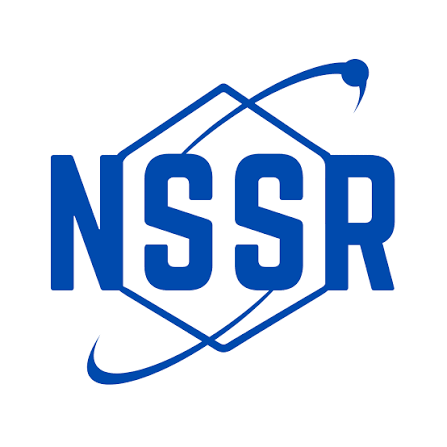
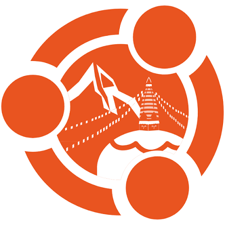
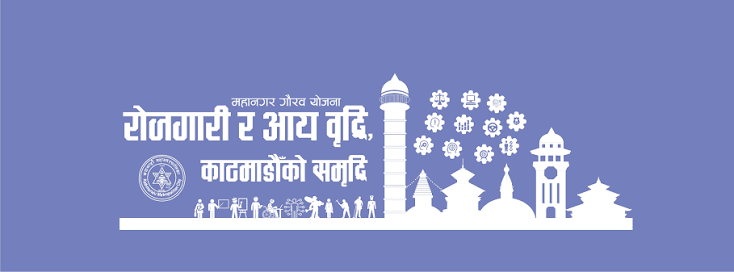

Experience
Backend AI Engineer Intern
FlyRank AI - Remote
July 2026 – Present
- Collaborating with an international tech community and senior mentors to refine technical and product-building skills.

Summer Research Fellow (AI/ML)
Nepalese Society of Student Researchers (NSSR)
July 2026 – Present
- Selected as one of the few fellows for the NSRF 2026 cohort following a rigorous multi-stage selection process, including a written review and a panel interview.
- Conducting advanced research and development in the AI/ML domain under the mentorship of industry and academic experts.
- Collaborating within a selective cohort of student researchers to build and analyze data-driven models and solutions.
Backend Engineer Intern
NIRMAN — Remote
April 2026
- Developed and maintained RESTful APIs using Next.js with CI/CD pipelines and Docker containerization for scalable backend services.
- Designed and maintained Prisma ORM schemas with migration support for MySQL databases.
- Built JWT/session-based authentication systems for secure login and signup workflows

College Representative
UbuCon Asia 2025 — Kathmandu, Nepal
Aug 2025
- Represented Nepal Engineering College at the largest Asia-Pacific Ubuntu & open-source summit, attending technical sessions on Linux kernel internals, cloud-native infrastructure, and collaborative development workflows.
- Networked with 200+ engineers, educators, and open-source contributors across APAC to explore open-source collaboration opportunities for the college's ECE curriculum.
- Documented key technical insights on containerisation and CI/CD practices and shared findings as internal knowledge-transfer sessions for 30+ peers.

Technical Trainer
SEEP Mela — Kathmandu Metropolitan City
Jun 2025
- Facilitated hands-on training workshops for caregivers and educators on deploying the Beautiful Minds mobile application — an ASD-support tool built with Flutter and Firebase.
- Demonstrated real-time use of assistive features (visual schedules, emotion-recognition prompts) to 50+ participants, achieving a post-session comprehension rate of >85% based on feedback surveys.
- Promoted neurodiversity awareness and inclusive education practices through structured demos and interactive Q&A panels co-hosted with child psychologists.
Group Ambassador
THE HAMRO — Pulchowk, Lalitpur
Sep 2021 – Dec 2022
- Coordinated logistics and promotion for educator-focused events reaching 500+ teachers and students across the Kathmandu Valley.
- Developed community-engagement strategies that increased event attendance by 30% over two consecutive semesters.
- Liaised between THE HAMRO's operations team and partner schools to streamline scheduling, communications, and volunteer management.
General Member
SEDS-Nepal
Aug 2019 – Present
- Contributed to national-level STEM outreach programs, engaging 1,000+ students annually in space science, rocketry, and satellite technology workshops.